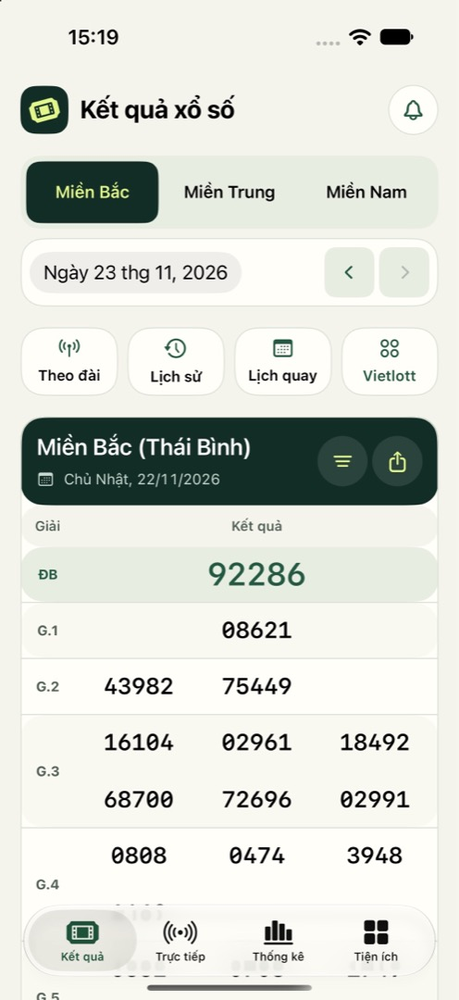

Kết quả theo ngày
Xem bảng giải từng đài, tra cứu kỳ trước và chuyển giữa số đầy đủ, 2 số cuối hoặc 3 số cuối.
Dành cho iPhone và iPad
Tra cứu kết quả xổ số ba miền và Vietlott. Chọn miền, ngày và đài để xem bảng giải. Đặt nhắc giờ mở thưởng theo giờ Việt Nam.
Hướng dẫn sử dụng
Xem bảng giải từng đài, tra cứu kỳ trước và chuyển giữa số đầy đủ, 2 số cuối hoặc 3 số cuối.
Xem kết quả, jackpot và cơ cấu giải của Mega 6/45, Power 6/55, Max 3D và Keno.
Chọn đài hoặc sản phẩm để nhận nhắc lịch trên thiết bị. Mở app để xem kết quả mới.